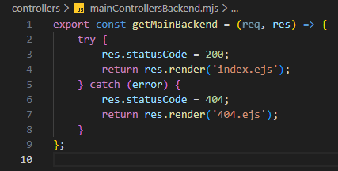

Alap route-olás - mainControllersBackend.mjs
Alap route-olás - mainControllersBackend.mjs

Ebben a részben szerkesztjük a controllers mappában a mainControllersBackend.mjs állományt, amelyben kidolgozzuk a CRUD Read művelethez tartozó logikát. Ez megfelel a http GET metódus-hoz tartozó logikának.
-
Szerkesszük a
mainControllersBackend.mjsállományt.-
export const getMainBackend = (req, res) => {...};- hozzuk létre és vigyük ki nevesítve ahttp GET metódus-hoz tartozó logikát (ReadaCRUDműveletekből). -
try { res.statusCode = 200; return res.render('index.ejs'); }- a sikeres ág a 200-ashttp hibakód-dal. -
catch (error) { res.statusCode = 404; return res.render('404.ejs'); }- a sikertelen ág a 404-eshttp hibakód-dal.
-